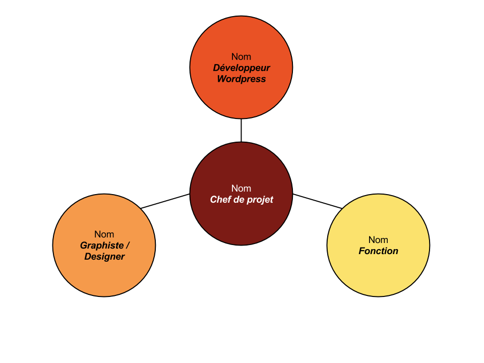

Gérer un projet digital avec une méthodologie en cascade
01 août 2019
Analyser et receuillir les besoins
Definir la gestion de projet
Contextualiser le projet
Analyser et recueillir des besoins
Formuler les objectifs et livrables
Décrypter une grille de lecture
Cadrez le projet avec votre équipe

Consulter les experts pour trouver la solution
Choisir une méthodologie de gestion de projet